There are many aptamers targeting Taq polymerase. We want to know which one has the best efficiency, and we are going to use it to conduct our next experiment.
Matterial & Method
Hairpin Essay
To measure the function and its inhibition of Taq Pol, a method called Hairpin extension assay is applied. During this assay, a hairpin-shaped oligonucleotide is used (In our experiment, we use a 49 mer-length of oligonucleotide). This hairpin-shaped DNA consists of three domains, the loop, a longer tail, and a shorter tail.
During the PCR condition, the Taq Polymerase would bind to the hairpin oligonucleotides, executing the process of DNA elongation at the shorter tail. If the polymerase works smoothly, the hairpin DNA would have a pair of equal-length tail (the total length would become 64 mer in our experiment) eventually.
However, if the Taq Pol fails to perform its job perfectly during some situations, the total length and structure would remain the same or have the length between original hairpin and equal-length tail hairpin.
Extension DNA product is analyzed by DNA electrophoresis in acrylamide gel. Fragments with different lengths will be separated. By measuring the amount of extension product, we can know the activity of polymerase.
Appropriate aptamer selection and Graphene Oxide (GO)/GO-aptamer experiments are conducted using the following protocol.
In each 100μl PCR tube 1.1μl PCR buffer, 0.4μl Taq polymerase , 1.1-2.2μl examine aptamer sample (aptamer, dimer aptamer, GO/GO-aptamer) are mixed, and ddH2O is added to 7.7μl
Samples are incubated at room temperature for 30min to form up polymerase-aptamer complex
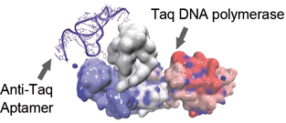
1.1μl 49bp hairpin DNA are added in every sample tube and kept on ice box to avoid room temperature PCR
Hot-start PCR are initiated following each experiment’s PCR protocol in PCR machine
EDTA1.1μl are added into each tube to stop reaction
After adding 1.1μl of complementary hairpin DNA, temperature gradient incubation (95 °C 15min, 75°C 5min, 55°C 5min, 35°C 5min, 15°C 5min) is exerted in order to form dsDNA hairpin for easier further analysis
Gel electrophoresis
We prepared acrylamide gel for gel electrophoresis to examine our aptamer test result.
Each sample tube is added with 2.2μl DNA loading dye
Glass container are sealed up by 2% agarose
26.7ml Bis/acrylamide, 10ml pH8.8 Tris, 2.33ml ddH2O, 400μl APS and 40μl TEMED are mixed and added to the glass gel container to form a 40ml acrylamide gel
6μl 50bp DNA ladder and 12μl of sample in each tube are loaded into well. Electrophoresis are preformed using electrophoresis chamber and 0.5X TBE buffer (5X TBE buffer, 1:10 dilution ), with a time duration of 4 hours and a 170V of voltage
The electrophoresis chamber is dissembled, following up with gel staining (Novel Green, Gene Direx, 1:10000 dilution) for 30min
The final result is examined by gel imager
Capillary gel electrophoresis
Capillary gel electrophoresis (CGE) is a method to separate short DNA fragment by their difference of charge and size. Its efficiency and sensitive are much higher than traditional gel electrophoresis. In our experiment, we used it to identify 49mer hairpin and 64mer hairpin extension, and apply CGE on aptamer test.
Result
Gel Electrophoresis
Temperature / inhibit efficiency
25℃
30℃
35℃
40℃
45℃
tq21
98.97%
98.23%
98.92%
45.77%
13.31%
cw1
100%
100%
90.43%
21.44%
0%
cw3
100%
100%
70.65%
43.67%
0.01%
cw4
88.38%
88.06%
22.87%
0%
0%
Aptamer 4-1
95.34%
94.83%
94.83%
25.71%
0%
Aptamer 6-10
99.99%
90.93%
60.32%
0%
0%
Anti-Taq
96.28%
--
61.66%
7.66%
7.87%
Capillary gel electrophoresis
Intensity
Temperature / inhibit efficiency
35℃
tq21
47.42%
cw1
13.03%
cw3
37.22%
Aptamer 4-1
29.77%
Aptamer 6-10
32.55%
Anti-Taq
2.36%
Control
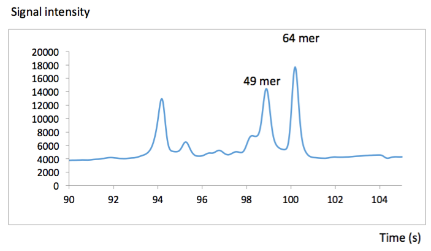
tq21cw1
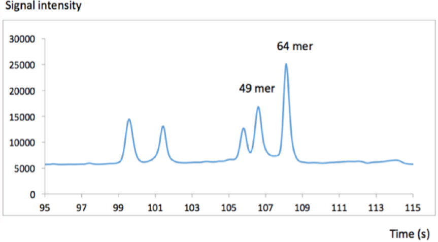
cw3
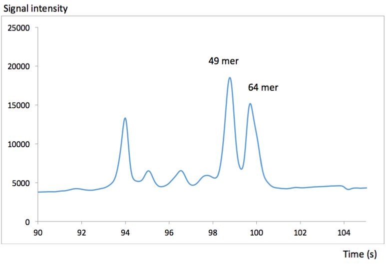
Aptamer 4-1Aptamer 6-10Anti-Taq
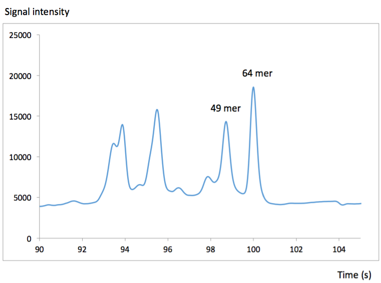
Discussion
From PAGE(polyacrylamide gel electrophoresis) experiment result, we can conclude that all Ic50 values of aptamers ranged from 33-39°C. Higher temperatures generally decrease the inhibitory efficiency of aptamers selected against Taq polymerase. Efficiencies begin to drop from the initial value when the temperature rises above 30°C
Among all aptamers, tq-21 has the highest critical temperature (the temperature at which efficiency starts to drop) and the highest efficiency of 13.31% at 45°C
CGE (Capillary gel electrophoresis) measurement supported that tq-21 is the best inhibitor among all aptamers tested, with about 47% inhibitory efficiency at 35°C
If to choose the second-best inhibitor, cw-1,cw-3 and anti-taq are the possible choices. These aptamers have the second highest inhibitory efficiency at 35, 40, and 45°C, respectively. Our further tests of aptamer hetero/homodimers took all three into considerations
Step Two: Aptamer Design
Aim
To enhance the efficiency of aptamer, we modify the sequence of aptamer, and thus change its 3D structure.
5’-TTT TTT GGC GGA GCG ATC ATC TCA GAG CAT TCT TAG CGT TTT GTT CTT GTC TAT GA-3’
Aptamer 4-1
5’-ACT TGA TGG CGG GTG TGG TAG GCG CCA TCT-3’
Aptamer 6-10
5’-CAA GAC GGG CGG GTG TGG TAG GCG CCC GTG-3’
Anti-Taq
5’-ACA TTG CTC TTC ATA TAG TGA CAA TGT ACA GTA TTG-3’
Hybrid aptamer
We design 18 mer of complementary sequence to make aptamer-dimer.
We suppose that when two aptamer combine together, their structure will become more stable. Besides,
if two aptamer have different binding site on polymerase, they can inhibit the enzyme simultaneously.
figure1: aptamer complementary sequence
Left: ATGCAACATATTTACGAT
Right: TACGTTGTATAAATGCTA
Binding on graphene oxide
We supposed that combine aptamer with graphene oxide can enhance the efficiency of inhibiting polymerase.
Therefore, to bind on graphene oxide, we add poly A (20 adenine) at the 5’ end of the aptamer.
The poly A can increase the hydrogen bond and van der waals forces between aptamers and graphene oxide.
Figure2: poly A help aptamer to combine with graphene oxide
Result
--
Modified aptamer RH
Modified aptamer LH
tq21
cw1
cw3
cw4
Aptamer 4-1
Aptamer 6-10
Anti-Taq
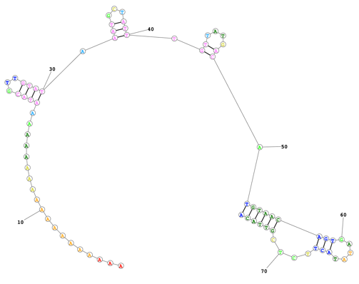
Figure3: aptamer dimer and graphene oxide complex
Modified aptamer capillary gel electrophoresis
Temperature / inhibit efficiency
Original aptamer (35℃)
Modified aptamer RH (35℃)
Modified aptamer LH (35℃)
tq21
47.42%
8.7%
40.11%
cw1
13.03%
15.53%
4.6%
cw3
37.22%
44.18%
100%
cw4
6.19%
8.25%
6.94%
Aptamer 4-1
29.77%
25.45%
35.83%
Aptamer 6-10
32.55%
15.82%
23.89%
Anti-Taq
22.36%
13.12%
9.6%
Control
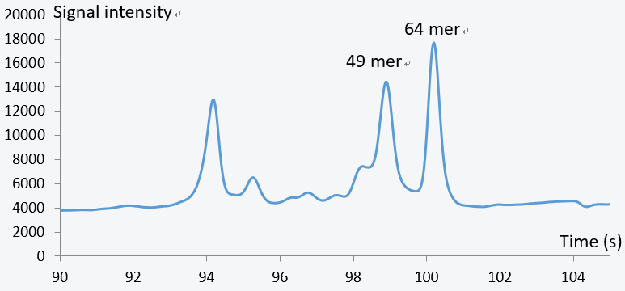
--
Modified aptamer RH
Modified aptamer LH
tq21
cw1
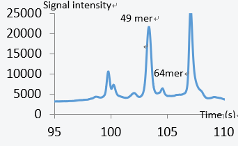
cw3
cw4
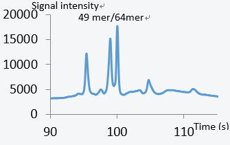
Aptamer 4-1
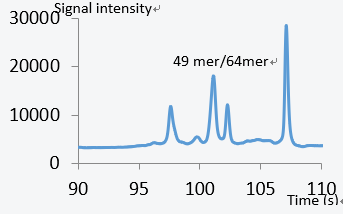
Aptamer 6-10
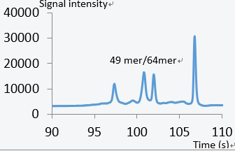
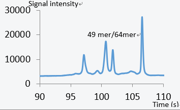
Anti-Taq
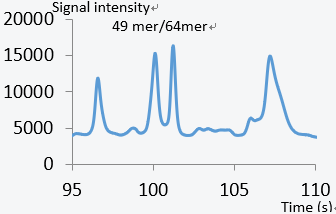
Discussion
Based on our result, modification may
increase or decrease the inhibitory efficiency of aptamers. For example, the
inhibitory ratio of CW 3-Lh modified aptamer comes up to 100%, while CW 1-Lh
modified aptamer goes down to 4.6%.
In average, the Rh modification is better than Lh modification.
The modification may change the structure of aptamers, and thus affect
its inhibitory efficiency. Therefore, we chose the best four aptamers,
TQ21-Lh, CW 3-Lh, CW 3-Rh dimer, and aptamer 4-1-Rh, for our following experiment.
Step Three: Aptamer dimer and aptamer-NP complex hairpin assay
Aim
We supposed that hybridized aptamers are not only more stable but also better
inhibitors since they may bind to different binding sites. Through the following test, we can examine the
different combinations of aptamer hybridized dimers. The tested aptamer monomers are: tq-21, 4-1, cw-3,
according to results in the previous steps. Besides, we also combined aptamer dimer with graphene oxide,
wondering if the efficiency of aptamer will enhance.
Material & Method (more info)
Chart 1: Aptamers used in the hybridized dimer test
Modified aptamer LH
Modified aptamer RH
TQ21
CW3
TQ21
Aptamer 4-1
CW3
Aptamer 4-1
Aptamer dimer
As we mentioned before, we had modified aptamer with complementary sequence
to make Aptamer-Lh and Aptamer-Rh combine. Therefore, as long as aptamer-Lh and Rh are added into
the same reagent, they can become aptamer dimer within 30 minutes.
Aptamer binding on Graphene oxide protocol
5mM sodium phosphate buffer is prepared, and 100mM sodium chloride is added.
2.5 μM Aptamer-Lh-polyA, Aptamer-Rh-polyA and 0.08μg/mL Graphene oxide are added into buffer to react 2h.
1M sodium chloride is added in order to increase the binding rate, and the reaction extend 2h.
Centrifugation (55000 rcf, 2h)
To quantify the percentage of unbound aptamer, the absorbance of supernatant is measured at 260nm.
Prepare phosphate buffer (25 mM Tri s -HCl (pH 7.4), 150 mM NaCl , 5 mM KCl , 1 mM MgCl2, and 1 mM CaCl2)
The pellet is washed by phosphate buffer
The mixture is centrifuged in 55000 rcf for 2 hours
Step 7 and 8 are repeated 3 times
Store at 4°C
Hairpin assay
To test aptamer dimer and aptamer-NP complex, we execute hairpin assay on them.
For more information of hairpin assay, please read Step 1.
Result
Aptamer dimer hairpin assay result
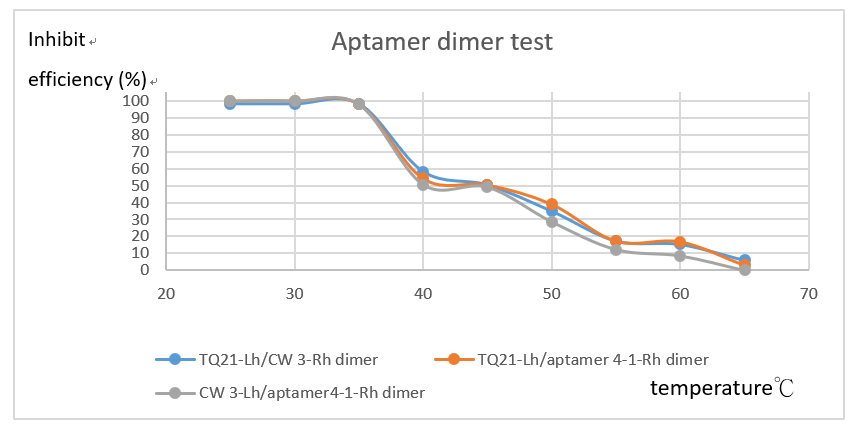
--
25℃
30℃
35℃
40℃
45℃
50℃
55℃
60℃
65℃
TQ21-Lh/CW 3-Rh dimer
98%
98%
98%
58.15%
50.30%
34.86%
17.30
15.28
5.89
TQ21-Lh/aptamer 4-1-Rh dimer
100%
100%
98%
54.19%
50.48
39.09
17.33%
17%
3.08%
CW 3-Lh/aptamer4-1-Rh dimer
100%
100%
98%
50.58%
49.18%
28.69%
12.29%
8.57%
0%
Aptamer binding on Graphene oxide
Complex
Yield(%)
Attached Quantity (mole/g)
Tq21-Lh Aptamer 4-1-Rh
36.1
0.091
Tq21-Lh CW3-Rh
35.9
0.089
CW3-Lh Aptamer 4-1-Rh
36.9
0.092
Aptamer-NP complex hairpin assay result
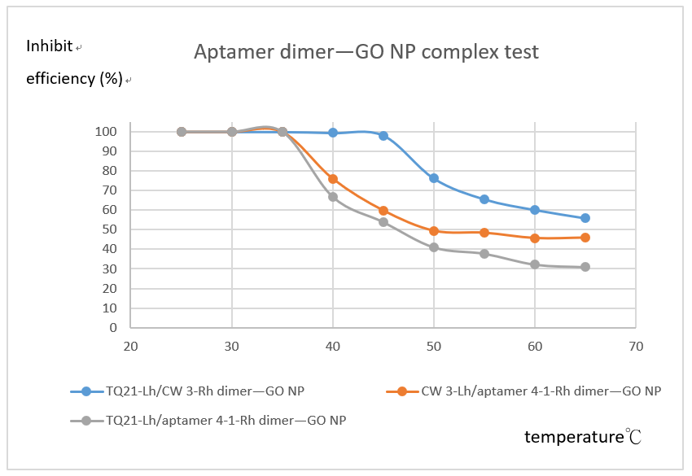
--
25℃
30℃
35℃
40℃
45℃
50℃
55℃
60℃
65℃
TQ21-Lh/CW 3-Rh dimer—GO
100%
100%
100%
99.49%
98.16%
76.22%
65.62%
60.21%
55.97%
TQ21-Lh/aptamer 4-1-Rh dimer—GO
100%
100%
100%
75.99%
59.78%
49.43%
48.41%
45.68%
45.93%
CW 3-Lh/aptamer4-1-Rh dimer—GO
100%
100%
100%
66.78%
53.94%
41.07%
37.85%
32.29%
31.03%
Discussion
Through our test, we found that all three aptamer dimers have similar inhibitory curves
under different temperatures. Dimers maintained full inhibitory efficiency until 40°C. The efficiency then
gradually halved when temperature is raised to 45°C. Inhibitory efficiency are under 10% at 65°C. Of all
three kinds of aptamer hetrodimers we tested, TQ21-Lh/aptamer 4-1-Rh dimer—GO has the greatest efficiency
throughout the heating process and maintained 55% inhibitory ability under 65°C. The dimer and complex results
mainly correspond to our monomer test results(step1). Moreover, the effect of aptamer dimers is 5 times stronger
under 60°C when complexed with graphene oxide. This implied that the complex might be an effective reagent,
compared with commercial polymerase-targeting aptamer products, to inhibit multiple band production.
Step Four: Genome DNA PCR
Aim
In the previous experiment, we have conducted hairpin
assay to examine the inhibitory efficiency of aptamer-NP complex. In order to
know whether the complex can also inhibit polymerase in the real PCR condition,
and thus solve the problem of non-specific binding, therefore, we use DNA
extracted from human genome as template to conduct PCR.
Material & Method (more info)
Template
Genome DNA of TSGH (Bladder cancer cell) & H1299 (lung cancer cell)
Primer
E207-Loc-RG1-F 1071126_1026
E208-Loc-RG1-R 1071126_1027
E209-Loc-RG2-F 1071126_1028
E210-Loc-RG2-R 1071126_1029
PCR
1. PCR reagent is prepared as the following table.
genome DNA
1µg
dNTP
0.4 µl
Forward primer
1.5 µl
Reverse primer
1.5 µl
10X buffer
2 µl
Taq polymerase
0.2 µl
Aptamer-NP complex
2 µl
ddH2O
Added to 20 µl
2. Run PCR for 35 cycles in the following condition
3. PCR product is loaded into 1.5% agarose gel. Electrophoresis runs in TAE buffer at 140V for 30minutes
Result
Discussion
By performing the whole genome PCR of two type of cell
extraction (TSGH and H1299), we can examine the inhibitory ability of the aptamer-GO
complex in the actual 35 cycles PCR. As the electrophoresis result indicates, both
primer we used (RG1, RG2) produced a target band at around 500bp. In the four experiment
groups, we can find that the aptamer-GO complex increases the band intensity of
target bands, especially the TSGH RG1 primer group, whereas PCR without complex
possess no target band. In addition, the complex also reduces the intensity of
non-target band of the H1299 RG2 primer group.
In conclusion, we believe that the aptamer-GO complex
shows its ability to inhibit Taq polymerase working at low temperature not
only in hairpin assay but also in the reality PCR process. Such technique can
effectively increase the intensity of target bands and reduce the formation of
non-target bands by inhibiting the polymerase while the primer forms non-specific
binding at low temperature.
Step Five: Transmission electron microscopy (TEM)
Aim
To examine the exact form of aptamer and confirm whether aptamer-graphene oxide nanoparticle complex is stably formed.
Material & Method (more info)
According to experiment 1~3, we chose cw3/tq-21 graphene oxide complex as our sample.
Dilute the complex solution from 5000nM into 50nM and vortex the solution.
Drop a single drop of solution onto a 3mm 200 mesh copper grid.
Dry the washed sample in vacuum oven overnight.
Examine the sample using JEOL JEM 2100 PLUS transmission electron microscope.
The following magnification conditions are used: 200kV, 300,000x.
Picture source: JEOL official website
Result
Photo(1) Pure aptamer. TEM magnification 200kx
The darker regions (labeled with yellow) are aptamer crystals.
Photo(2) A closer look of aptamer crystal lattice under TEM
The linear structures marked with red lines under TEM are aptamer crystal lattices. After dehydration, aptamers will crystalize as shown.
Photos(3)(4) Aptamer-Graphene Oxide complex. Magnified at 200kx
The margin of graphene-oxide sheet is labeled with red lines, and aptamers are labeled with yellow.
Discussion
Theoretically, aptamers are affinitive to graphene oxide particles due to abundant pi
bonds on both materials. They conjugate mainly through pi-pi stacking interaction. In this experiment,
we examined the complex under TEM to confirm if aptamers really attach to graphene oxide nanoparticles.
The photos show that after dehydration, pure aptamer arranged into lattice structure. On the other hand,
we observed both similar lattice structure and aptamer monomer on the surface of GO nanoparticle.
More crystal structures are observed under aptamer-GO complex than aptamer itself.
The result is consistent with our prediction.